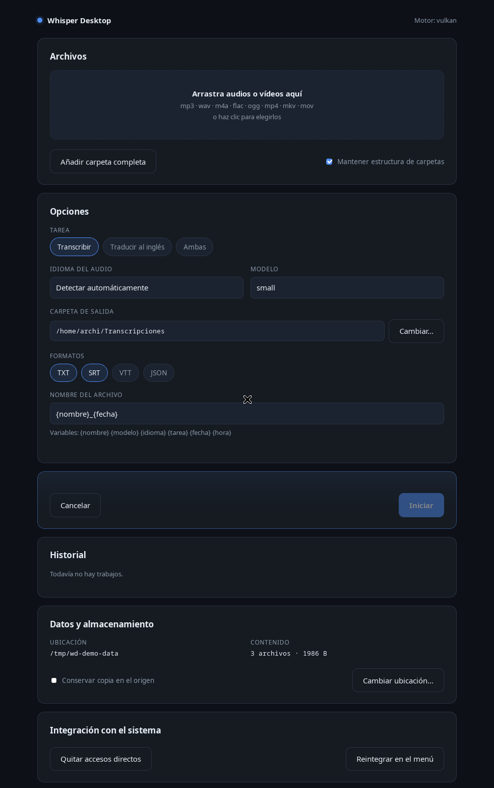
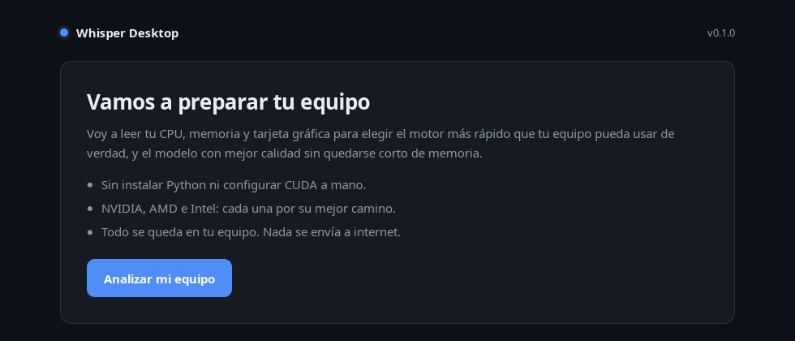
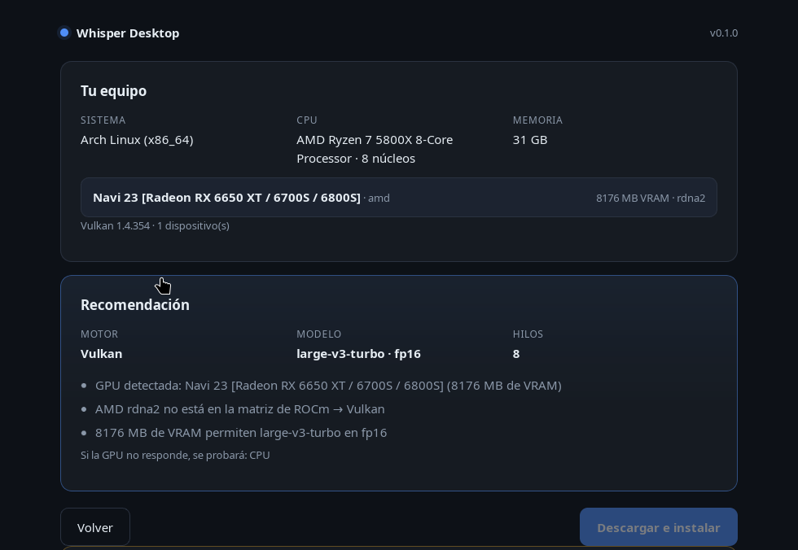

Un motor, no un entorno
Usa whisper.cpp: un binario por backend, sin Python, sin entornos virtuales y sin wheels de PyTorch de 3 GB.
Whisper Desktop detecta tu tarjeta gráfica, elige el motor y el modelo que mejor le van, y te deja una aplicación lista para arrastrar un archivo y obtener texto. Sin Python. Sin CUDA a mano. Sin enviar tu audio a internet.

El asistente lee tu hardware real, explica por qué elige cada cosa y solo entonces descarga. Nada de “confía en mí”.


Usa whisper.cpp: un binario por backend, sin Python, sin entornos virtuales y sin wheels de PyTorch de 3 GB.
Vulkan en Windows y ROCm en Linux cuando la GPU está soportada. Nunca se ofrece ROCm donde AMD no lo soporta.
Al instalar se ejecuta una prueba corta y se lee del log qué backend cargó de verdad. Si la GPU falló en silencio, cambia al siguiente.
Cada binario se comprueba con SHA-256 antes de ejecutarse. Si el hash no coincide, se borra y se avisa.
En Windows todo vive en la carpeta que extraes, con los datos dentro. Puedes moverla a un USB y sigue funcionando.
.deb, .rpm y paquete de Arch: se instalan desde el
centro de software y aparecen en el menú.
| GPU | Windows | Linux |
|---|---|---|
| NVIDIA (GTX 900+) | CUDA | CUDA |
| AMD RDNA 4 / Ryzen AI | ROCm | ROCm |
| AMD RDNA 3 | Vulkan | ROCm / Vulkan |
| AMD RDNA 1–2, Vega, GCN | Vulkan | Vulkan |
| Intel Arc / iGPU | Vulkan | Vulkan |
| Sin GPU | CPU | CPU |
La matriz completa, con el modelo recomendado por VRAM, está en docs/HARDWARE-MATRIX.md.
Extrae el ZIP y ejecuta WhisperDesktop.exe. Sin administrador.
Doble clic en el .deb y «Instalar» en el centro de software.
Doble clic en el .rpm, igual que el anterior.
Paquete precompilado desde Releases, abierto con pamac u octopi.
Los instaladores se publican en Releases. En el primer arranque la app descarga el motor (whisper.cpp + ffmpeg, ~210 MB) desde el release de backends, verificando el SHA-256 de cada archivo y la firma del catálogo antes de ejecutar nada.